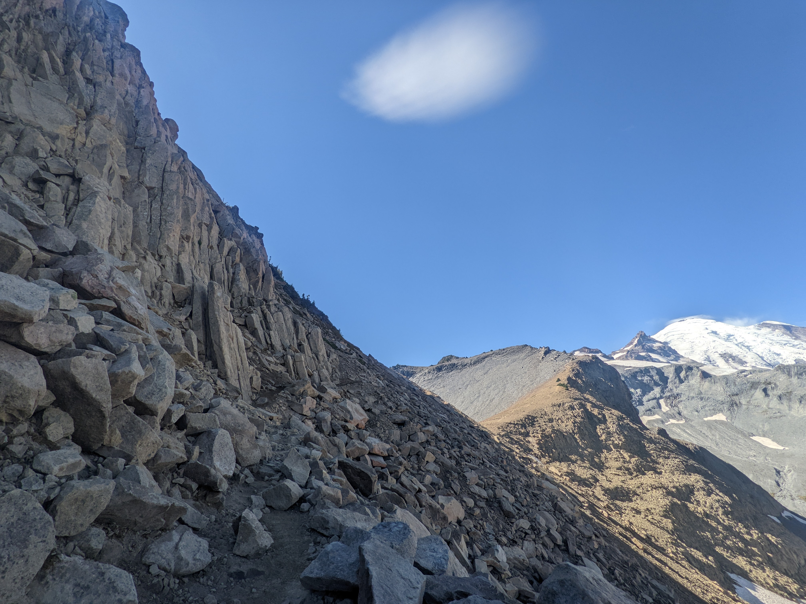

Rock columns
You can see some rock columns on the left. They formed when lava cooled down, shrank, and cracked.
Location: White River Entrance/Panhandle Gap
Visited: September 23, 2022 at 11:55 AM
You can see some rock columns on the left. They formed when lava cooled down, shrank, and cracked.
Location: White River Entrance/Panhandle Gap
Visited: September 23, 2022 at 11:55 AM